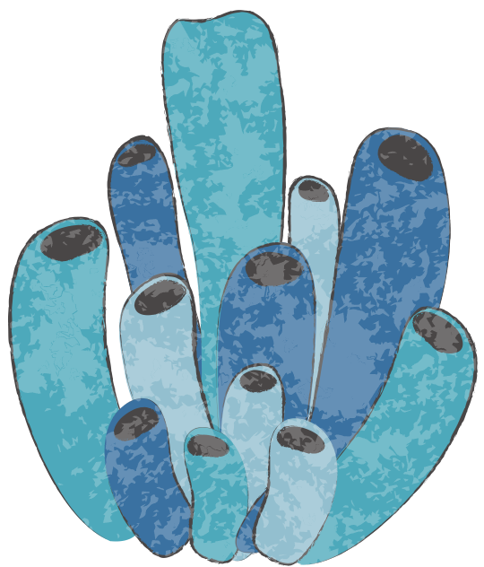

George Sato
Marine Biology PhD student at University of St Andrews
Interested in Bio-logging, foraging ecology and animal movement
Languages: English and Japanese

Marine Biology PhD student at University of St Andrews
Interested in Bio-logging, foraging ecology and animal movement
Languages: English and Japanese
I am developing tools for estimating the fat content of
free-ranging marine mammals from bio-loggers to better
understand their foraging ecology.
My goal is to develop tools that could determine important
foraging grounds of grey seals in the coast of UK.
Elephant seals cannot echo-locate nor they can see in the dark, yet they prey on 1000 to 2000 fish everyday. How do they achieve this?
Read moreWhales and seals are serious divers. Some whales only perform shallow dives, but large toothed whales such as sperm whales dive below 1000m. What has driven these animals to dive so deep?
Read moreIn 2021, a new species of beaked whale was discovered - are there more species hidden in the sea that are yet to be discovered? We will look into the most cryptic large animals, the beaked whales.
Read more